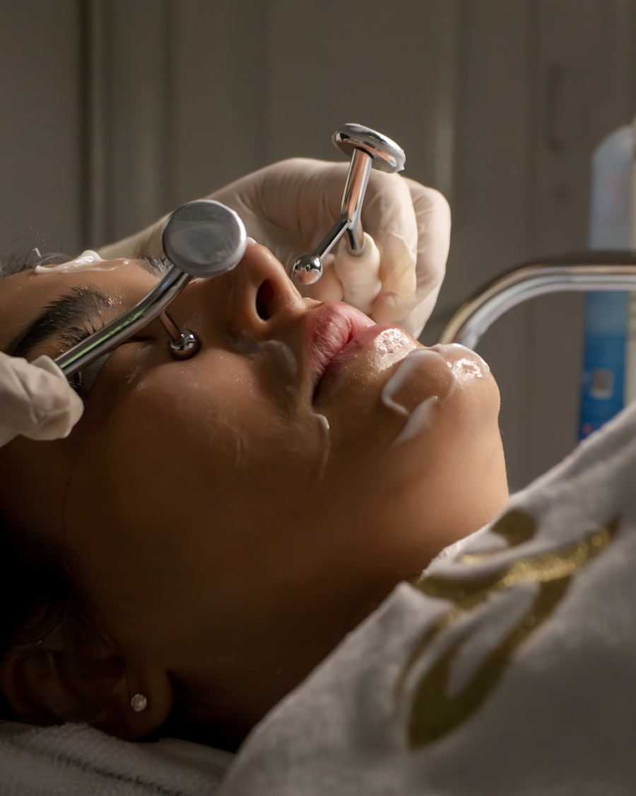

УходУход за лицом
Чистки, пилинги, увлажнение и восстановление — база для регулярного ухода и подготовки кожи к более активным процедурам.
- Механическая и ультразвуковая чистка
- Химические пилинги по показаниям кожи
- Маски и сыворотки с активными компонентами
Не подходит: при обострении герпеса, свежем загаре и открытых воспалениях — уточним на осмотре.